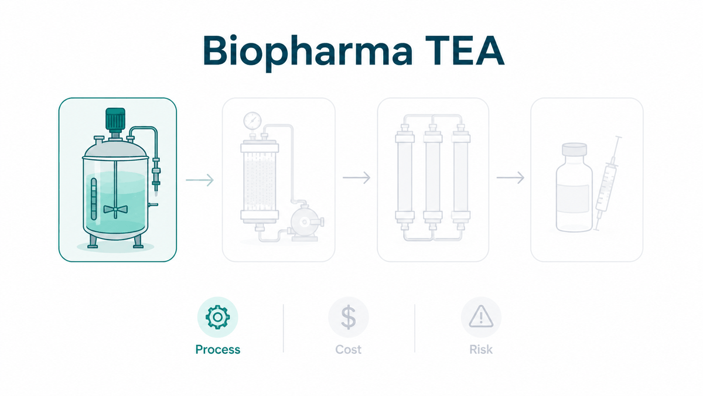
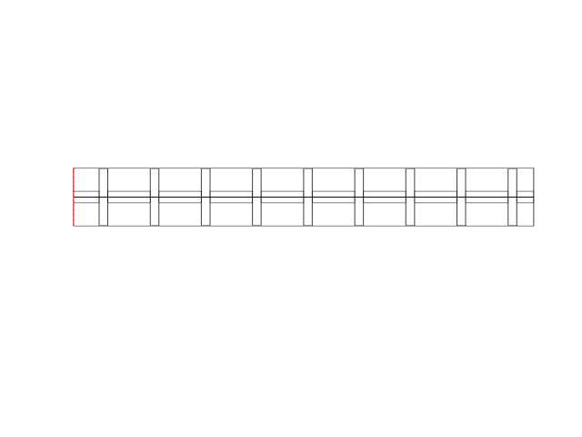
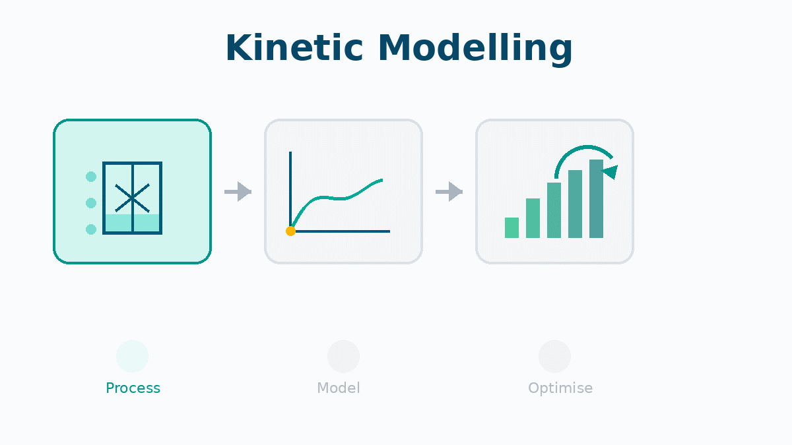
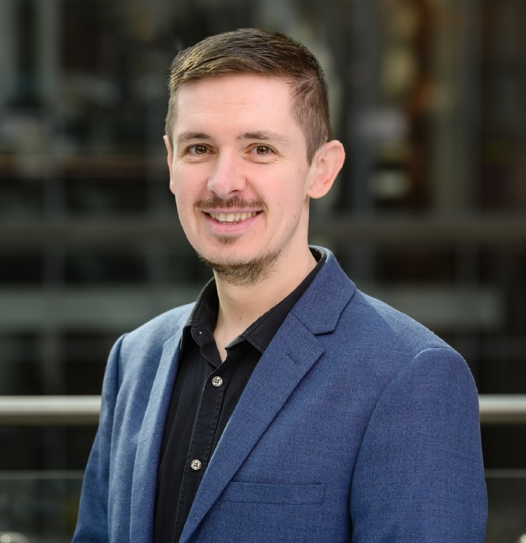
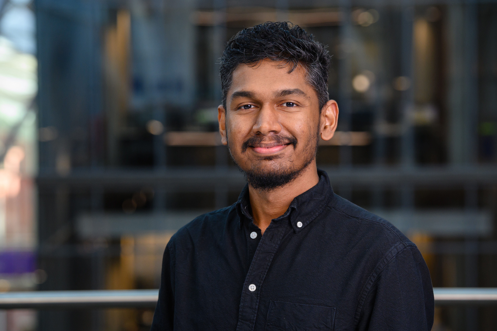
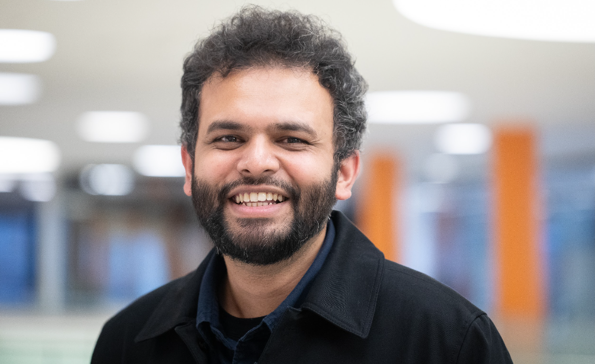

Simulenta supports clients in the biopharmaceutical industry make faster, better-informed decisions through techno-economic analysis, kinetic modelling, and multiphysics simulation; helping to accelerate development, reduce experimental burden, and de-risk scale-up.
We help clients evaluate whether a manufacturing process is commercially viable, productuive, and scaleable. By identifying the key CapEx and OpEx drivers, we enable informed decisions about process routes and development priorities, replacing intuition with structured, quantitative comparisons. We build models that integrate process flows, equipment sizing, operating assumptions, and cost structure to connect process design to commercial reality. Past work includes techno-economic analysis for RNA and biologics manufacturing with clients including WHO, Sensible Biotechnologies, and Kernal Biologics.

We help clients design, optimise, and scale complex bioprocesses with confidence. By resolving how fluid dynamics, reaction kinetics, and mass transfer interact within an equipment or process, we identify what is limiting performance and quantify the impact of design changes before any experimental or capital commitment is made. We simulate processes as whole systems by coupling the relevant physical mechanisms into a single coherent model. This allows us to pinpoint issues such as poor mixing, dead zones, and uneven residence times, and test solutions in silico so that decisions are grounded in physics, derisking technology develoment.

We help clients understand how operating conditions affect process performance and product quality, enabling faster design space definition, optimisation, robustness and scale-up without the need for extensive experimentation. This reduces development time and cost, particularly in the early stages where experimental data is scarce. We build mechanistic models grounded in the underlying science of your system ( material balances, reaction behaviour, and transport phenomena) that simulate how a process responds to changing conditions and can be refined incrementally as new data becomes available.

We work across mRNA, biologics, and advanced therapeutics

Professor of Bioprocess Engineering at the University of Sheffield and Honorary Lecturer at Imperial College London. Leads research on RNA vaccine manufacturing, digital twins, and techno-economic modelling. PhD in Bioengineering from Imperial College London.
PhD in Chemical Engineering from the University of Sheffield, MEng from Imperial College London. Specialises in fluid dynamics, mass transfer, and reaction engineering, helping companies improve process efficiency through integrated whole-process analysis.

PhD in Chemical and Biomolecular Engineering from HKUST. Specialises in mechanistic modelling of chemical and biopharmaceutical processes, with particular expertise in data-limited environments and model-experiment integration.

Bioprocess engineer specialising in techno-economic modelling and scale-up analysis for advanced therapeutics. Experience spans RNA manufacturing, biologics process assessment, and engineering-led decision support.
Interested in working with us? Email us at enquiries@simulenta.com